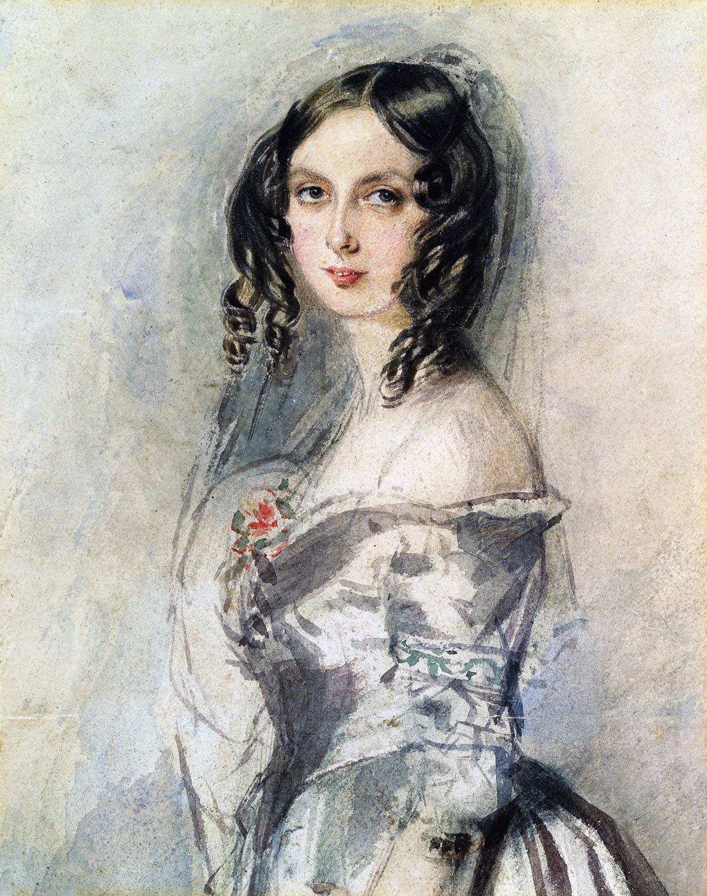

Logo |
Personajes |


Charles Babbage fue un matemático e inventor británico nacido en 1791 y fallecido en 1871, considerado uno de los padres de la computación por haber diseñado máquinas pioneras como la Máquina Diferencial y la Máquina Analítica, esta última concebida como la primera computadora programable; estudió en la University of Cambridge y colaboró con Ada Lovelace, quien desarrolló ideas clave sobre la programación, y aunque sus proyectos no se completaron en vida por limitaciones técnicas y económicas, sus conceptos sentaron las bases de la informática moderna. |
Ada Lovelace, nacida como Ada Byron en 1815 y fallecida en 1852, fue una matemática británica considerada la primera programadora de la historia por sus trabajos sobre la Máquina Analítica de Charles Babbage, en los que describió cómo una máquina podía ejecutar algoritmos y manipular símbolos más allá de simples cálculos numéricos; hija del poeta Lord Byron, combinó creatividad y rigor científico, anticipando conceptos fundamentales de la informática moderna mucho antes de que existieran las computadoras. |
Dennis Ritchie fue un informático estadounidense nacido en 1941 y fallecido en 2011, reconocido por ser el creador del lenguaje de programación C y uno de los principales desarrolladores del sistema operativo Unix junto a Ken Thompson en Bell Labs, aportes que sentaron las bases de gran parte del software moderno y de sistemas actuales, influyendo profundamente en la evolución de la informática. |